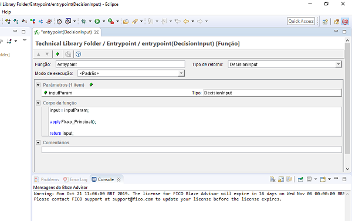

1) Instalações
Instalação dos arquivos:
Instale o arquivo:
jdk-8u221-windows-x64 (JAVA)
Instalar na pasta C:\Program Files\Java
blaze-advisor_7.5.7500.v11760_Windows (Blaze)
Observação: Escolher aonde ira ficar a pasta workspace do eclipse.
C:\Blaze\projetos\eclipse01\eclipse-workspace
No eclipse, ir em: Help - Install new software.

Add - local.


Observação: Para utilizar o plug-in do Blaze:
Após reiniciar, colocar o link para lincença:
Após colocar a licença:
Window - Perspective - Open Perspective - Other.

blaze Advisor - Open.
2) Criando Repositório
C:\Blaze\projetos

Observação: Este sistema de versionamento funciona com base em duas partes, uma denominada Central e outra Admin.
Crie dentro da pasta do seu repositorio, as seguintes pastas:
bvs-central
bvs-admin
Workspaces

Volte ao projeto vá em:
Repository - New Repository [Novo Repositório]


3) Criando um projeto
> Technical - Business - Testing - Decision ServicesCada parte será um subprojeto e terá funções específicas.
Para iniciar, iremos criar a parte Technical do projeto na aba:
File - New - Project
Blaze Advisor - Rule Project - Next
4) Business Object Model (BOM)
Variáveis de Entrada:
RENDA - SEXO - IDADE - ESTADO_CIVIL - NUMERO_CONDUTORES
Variáveis de Saída:
DIARIA - VALOR_AUTOMOVEL - VALOR_CAUCAO - CLIENT_TYPE - DECISION
Em um tutorial à parte eu ensino você a como criar um arquivo.jar. Link parar o curso:
Porém, nesse tutorial iremos utilizar um arquivo.jar pronto.
Baixar o arquivo e colocar na pasta:
C:\Blaze\projetos
Importando o BOM.jar no projeto
Window - Preferences


Apply and Close.
5) Usando o bom-Carro3.jar
New - Folder [Pasta].
Colocar o nome de [BOM].
New - Business Object Model - Modelo Java

next - Finish.

Observação: Dentro da pasta BOM, no editor eclipse, foi criado um arquivo [Java]. Podemos renomeá-lo para JavaBOM para facilitar nossa compreensão.

Team - Check-in.
Adicionar um comentário e fazer o Check-in.


Observação: A todo momento iremos utilizar as funções Check-in e Check-out.
6) Criação do Projeto
File - New - Project - Blaze Advisor - Rule Project - Next - RepositorioCarro - Next - RepositorioCarro - name: Business Library - Finish.
Testing:
File - New - Project - Blaze Advisor - Rule Project - Next - RepositorioCarro - Next - RepositorioCarro - name: Testing - Finish.
Decision Services:
Observação: A pasta Decision Services irá receber um nome [Regras...] para tornar o projeto mais intuitivo e facilitar a identificação.
File - New - Project - Blaze Advisor - Rule Project - Next - RepositorioCarro - Next - RepositorioCarro - name: RegrasAluguelCarros - Finish.
O projeto ficará assim:
7) Conectando os Projetos
open project editorNa área de edição do projeto, clicar no ícone, como mostra na imagem a seguir:

Incluir os projetos Business Library e Technical

Observação: Agora os projetos estão conectados com o seu projeto [Regras...].
Para fechar os projetos conectados ao principal basta clicar com o botão direito do mouse sobre o projeto que deseja fechar e ir na opção Close Project.
Aviso: Fechar todos os projetos, deixar somente o [Regras...].
Fazer Check-in em [Regras...].
8) RMA [Rule Maintenance Application]
C:\Blaze\projetos e crie um pasta chamada adb.
New - Folder - Name: Deploy.
New - Deployment Entities - Rule Maintenance Application Definition - Entity Name: RMADefinition - Finish.

Application Title [Título do Aplicativo]: Regras de Aluguel de Carros
Habilitar as seguintes opções:
Download Rules Command

Allow Editing of Table Name.
Display Branch Condition.

9) Função EntryPoint
Technical Library - New - Folder - Name: Entrypoint.
Clicar com o botão direito do mouse sobre a pasta:
Entrypoint - New - SRL Decision Entities - Function - Name: entrypoint - Finish.
Name: entrypoint
Type: Decisioninput
Criar um parâmetro e o corpo de uma função.
Observação: Faça como na imagem a seguir:

10) Variavel Global Input
New - Object Model Entities - Variable
Nome: input
Type: DecisionInput
Fazer check-in.
11) Gerar RMA
Project - Rule Maintenance Application - Generate Rule Maintenance Application.
Este comando irá abrir uma janela pop-up chamado Gerador de Aplicativo.
Observação: O Blaze já reconhece o arquivo RMADefinition. Este arquivo configura o deploy do projeto para o RMA WEB.

O RMA irá abrir automaticamente no navegador Internet Explorer e irá utilizar o local host [http://127.0.0.1:8080] para gerar a interface.
Observação: Você pode copiar o link e trocar de navegador.
Se você seguiu todos os passos até aqui, basta digitar admin e admin na senha para que você acesse a interface do RMA.
Você acaba de acessar o RMA.


Continuação do projeto
2º Etapa - Utilizando o RMA :
3º Etapa - Deploy no Tomcat :
4º Etapa - Avançado - Em construção